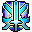

Chaos Argent
O evento de sobrevivência: ondas de baús e monstros, e gold para quem sobra no fim.
45 minrodadas sem parar
Semlimite de nível
1 milhãopara quem sobrar
7 ondasaté os Black Dragon
Quando e como entrar
- Rodadas de 45 min, uma atrás da outra (5 min de pausa entre elas): dá para entrar a qualquer hora em que uma rodada esteja rolando. As ondas contam o tempo desde o início da rodada.
- Entrada pelo portal em Icicle, Deep Blue 1370, 532. Sem limite de nível (por enquanto), sem grupo e com a
 Medal of Valor (Arena Administrator em Argent 2210, 2893, 50 mil, nível 25+). O mapa é PvP livre.
Medal of Valor (Arena Administrator em Argent 2210, 2893, 50 mil, nível 25+). O mapa é PvP livre.
Lá dentro
- A cada 5 minutos entra uma onda: aos 5, 10 e 15 min os baús do caos (Novice, Standard e Expert Chaos Chest: quebre para pegar os itens); aos 20 e 25 min os fantasmas das classes (Newbie e depois Phantoms de cada classe); aos 30 e 35 min os Black Dragon (Lance, Carsise, Phyllis e Ami), a parte mais difícil.
- Quem estiver vivo quando o mapa fecha divide 1 milhão. Sozinho, você é o vencedor: leva o gold inteiro e o King of the Ring Emblem.
O que trocar
- No Chaos Administrator (Shaitan 967, 3553 e Icicle 1374, 529):
- Saint of the Ring Emblem → Standard Chaos Voucher;

King of the Ring Emblem → baú do caos. - 100 vouchers → guias de profissão dos níveis 4 e 5 (veja Profissões).
- Saint of the Ring Emblem → Standard Chaos Voucher;
- Os pontos de caos (ranking) vêm de vencer jogadores do seu nível: só contam no online.